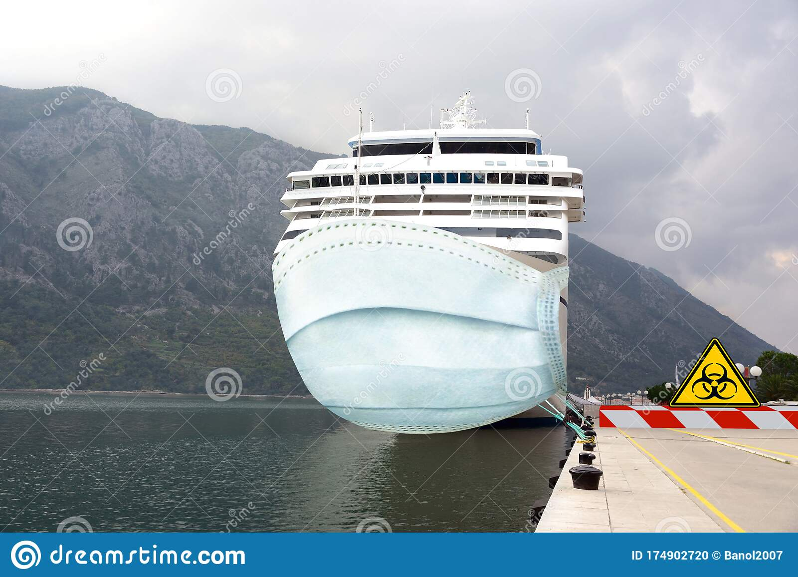

The mast is a rangy spar arrangement that is elevated more or less vertically to the Centreline of a ship.
It has several purposes, including carrying derricks and giving fundamental height to the navigation light, salient yards, radio or radar aerials, and scanners.
